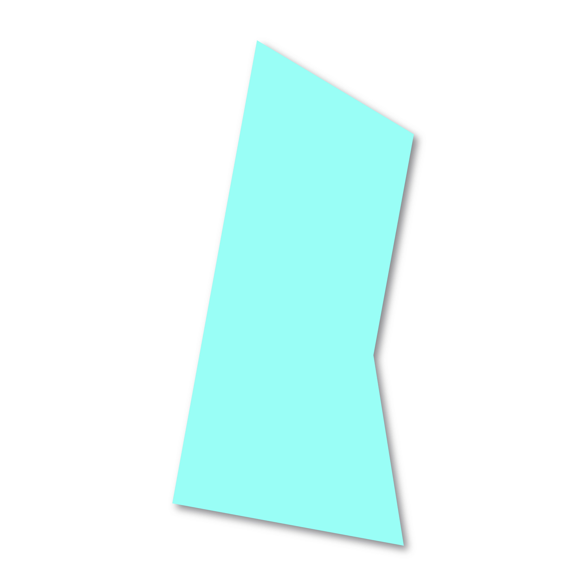
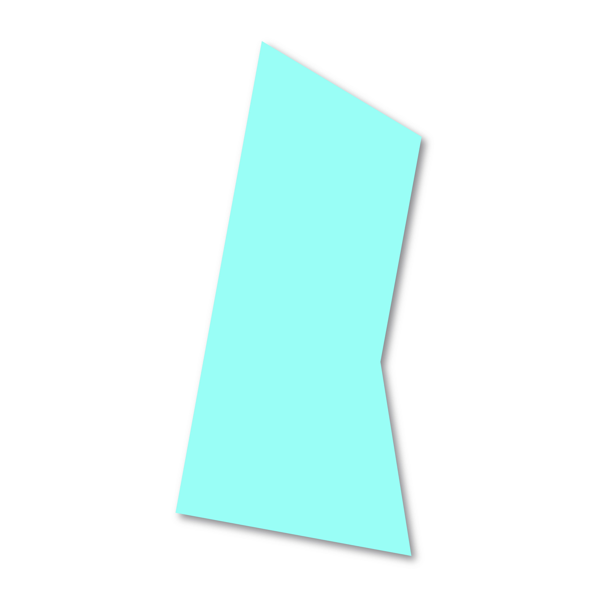
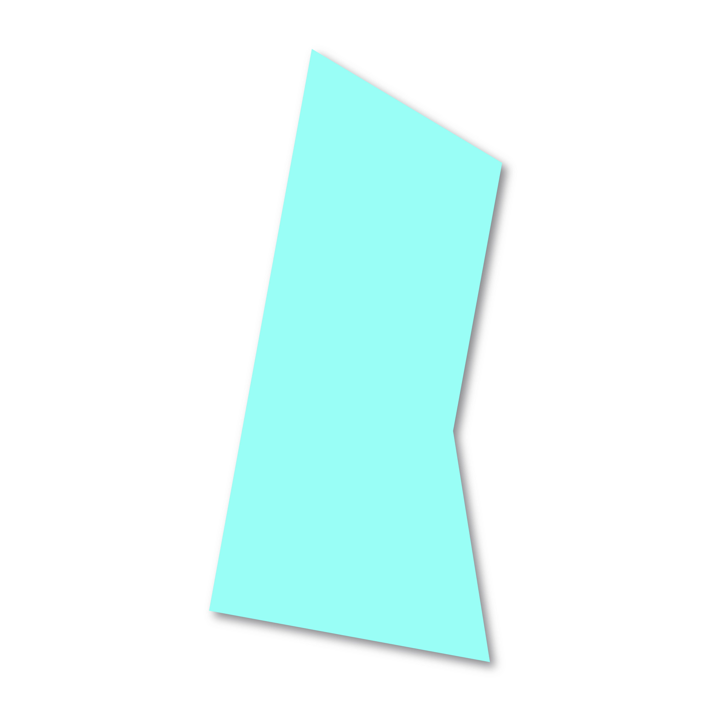
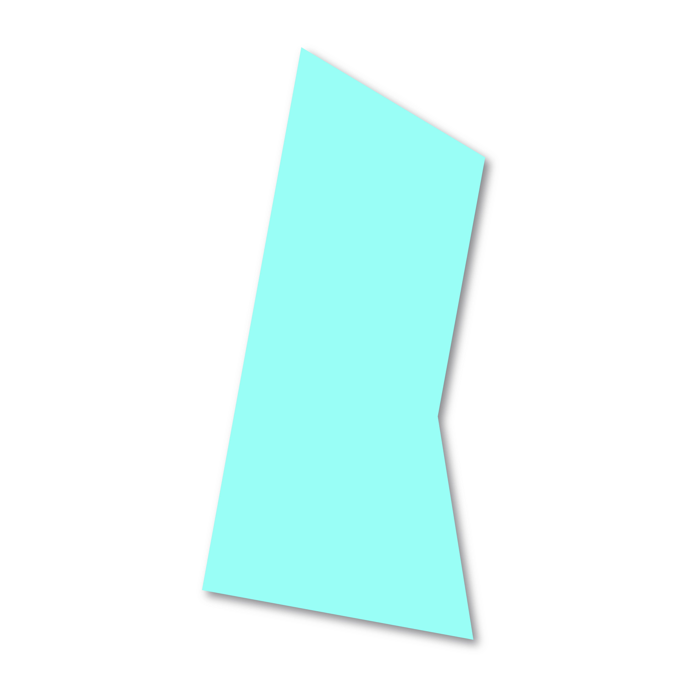

In their 1988 exhibition Art as Verb, curators Lowery Stokes Sims and Leslie-King Hammond wrote that artists “moved the art ‘object’ from a static state . . . to explore kinetic properties related to the human experience.” The artists in that exhibition—many of whom have work on view in this gallery—used unconventional and tactile materials to highlight everyday actions, anchor bodily presence, and expand their work into installations.